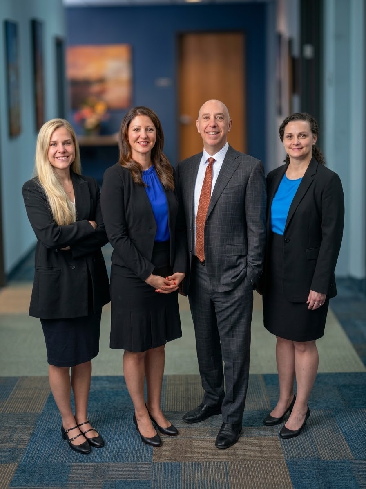

Maryland Counsel For Facility Residents
Legal questions connected to residential care can be difficult to evaluate when several people and organizations are involved. A consultation with a Nursing Home Abuse Lawyer in Maryland can help define the central concern and show what kind of information or review may be useful. A Nursing Home Abuse Lawyer in Maryland may also help a family distinguish between an internal resolution process and a formal legal matter, so decisions are made with realistic expectations.
An effective consultation should account for how the resident communicates and how the resident wishes to participate. A Nursing Home Abuse Lawyer in Maryland can help arrange discussions in a way that respects confidentiality and makes the resident's perspective easier to include. If multiple relatives or professionals participate, a Nursing Home Abuse Lawyer in Maryland may help establish clear communication boundaries and reduce confusion during the review.
Families can consider whether a proposed response is proportionate to the concern and workable for the resident. A conversation with a Nursing Home Abuse Lawyer in Maryland may provide an independent perspective on whether further action is appropriate and how the process could proceed. Thoughtful guidance should support informed choices while limiting unnecessary disruption to daily life.

Legal Answers For Facility Injuries
The first account of an event in a care setting can influence how later questions are answered. A Nursing Home Abuse Lawyer in Maryland can compare the reported circumstances with the duties that applied at the time, including expectations for supervision, medication handling, and premises upkeep. Contemporaneous observations and images of the surroundings may preserve details that are difficult to reconstruct later. Should an outside party examine the matter, a Nursing Home Abuse Lawyer in Maryland can help present the facts in an orderly and measured way.
Responsibility is not determined solely by the seriousness of an outcome. A Nursing Home Abuse Lawyer in Maryland can examine whether a preventable condition, an unreasonable response, or a departure from accepted practice contributed to the event, while considering whether more than one source of conduct is relevant. Changes to the surroundings, staff assignments, or written accounts may affect how the facts are interpreted, so preserving original material matters. A Nursing Home Abuse Lawyer in Maryland can use that foundation to evaluate the scope of a demand and respond when another account minimizes what occurred.
The next stage may involve correspondence, negotiation, or a court filing, depending on the available support and the applicable time limits. With a Nursing Home Abuse Lawyer in Maryland, a person can assess proposed communications carefully, avoid premature admissions, and choose a course that reflects the individual's circumstances and the evidence. Specific, verifiable information is generally more useful than speculation, especially when accounts differ. Early attention can help preserve options without promising a particular result.
Nursing Facility Legal Issues Explained
Questions about admissions agreements, service promises, billing practices, and regulatory obligations can affect a resident's rights from the beginning of a dispute. Nursing Home Abuse Lawyer in Maryland can help a resident or family member examine whether the written contract matches what was offered and whether a disputed clause affects available remedies. It can also be useful to examine notices about rate changes, discharge decisions, grievance procedures, and arbitration before signing or responding. Nursing Home Abuse Lawyer in Maryland can explain how these documents fit together and identify deadlines that could affect a complaint, agency review, or civil claim.
When a concern is raised, organized records can make later evaluation more efficient. Keep copies of contracts, invoices, care plans, incident notices, complaint responses, and communications with the provider, while preserving original files in their existing form. Nursing Home Abuse Lawyer in Maryland may assess whether the organization followed its own policies and applicable reporting requirements, while Nursing Home Abuse Lawyer in Maryland can help present questions to regulators, insurers, or opposing counsel in a focused manner. Families should avoid posting private records online and should consider how public statements could affect a formal process.
Resolution may take several forms, including a negotiated agreement, a formal agency complaint, mediation, or litigation. The appropriate path can depend on the type of harm alleged, the available evidence, the contract's dispute provisions, and the remedy sought. Nursing Home Abuse Lawyer in Maryland can help weigh practical costs, confidentiality terms, release language, and the effect of accepting or rejecting an offer. Whatever approach is chosen, clear communication, careful documentation, and respect for the resident's privacy can support a more reliable and informed decision.
Jenner Law Firm
Jenner Law Firm
Baltimore City 3600 Clipper Mill Road, Suite 240 Baltimore, MD 21211
(888) 298-3453